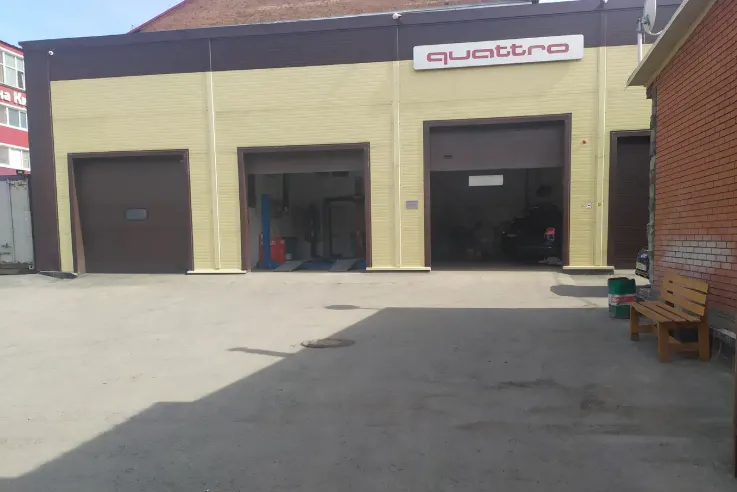
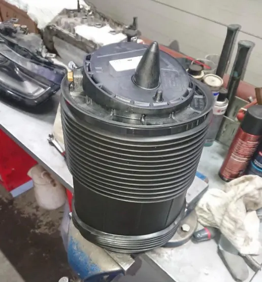
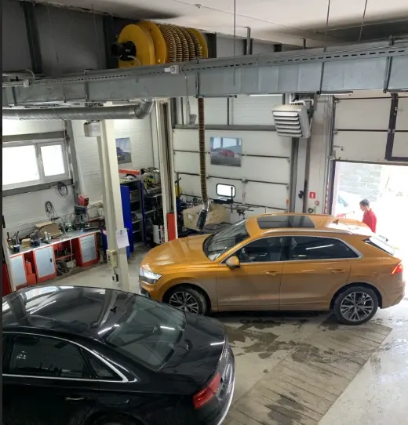
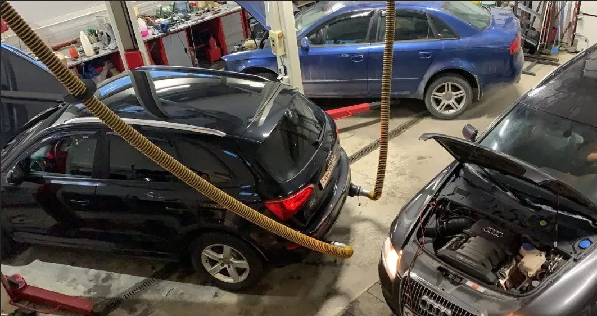

Кватро Моторс
Специализированный сервисный центр
Авторемонт Audi, ремонт ходовой части автомобиля, ремонт пневмоподвески
- Рейтинг 4,7 в 2ГИС по 86 оценкам, 42 отзыва
- Новосибирск, Гурьевская улица, 64 к2
- Специализация – Audi и автомобили группы VAG

Как устроена работа
Входит
- Специализация – Audi и автомобили группы VAG
- Оригинальный специнструмент для VAG – по отзывам
- Объясняют и показывают, что неисправно – по отзывам
- Оплата картой, наличными, по QR-коду; рассрочка «Плати частями»
- 6 парковок, запись по телефону или в Telegram
Отдельно, если нужно
- Итоговая цена зависит от автомобиля и объёма работ
- Стоимость называют после диагностики
Услуги и цены
Прайса на карточке в 2ГИС нет. Стоимость называют после диагностики, уточняйте при записи.
Диагностика и обслуживание
- Компьютерная диагностикауточнить
- Замена масладвигатель, коробка, редукторыуточнить
- Развал-схождениеуточнить
- Климатические системыуточнить
- Ремонт электронных системуточнить
Ремонт
- Ремонт ходовой частиуточнить
- Ремонт пневмоподвескиуточнить
- Ремонт АКППуточнить
- Стартеры и генераторыуточнить
- Автосигнализацииуточнить
Цены не указаны на карточке в 2ГИС – уточнить при записи.
Четыре шага от записи до выдачи
- 01
Записались
Позвонили или написали в Telegram, назвали модель и что беспокоит.
- 02
Диагностика
Мастер осматривает автомобиль и находит неисправность.
- 03
Согласование
Называют стоимость работ и запчастей, вы решаете, что делать.
- 04
Выдача
Забираете автомобиль и рассказываете, что понравилось.



Что говорят клиенты
Принцип – качество
«Один из немногих, чей принцип работы направлен на качественный сервис» – из отзыва в 2ГИС.
Оригинальный инструмент
«Удивило огромное количество оригинального спец инструмента для Ваг группы» – из отзыва в 2ГИС.
Берутся за сложное
«Никто в городе включая дилера не смог помочь… А в Кватро Моторс оно оказывается есть!» – из отзыва в 2ГИС.
Открыто и честно
«Радует, что все открыто и честно, показали, рассказали» – из отзыва в 2ГИС.
Отзывы с 2ГИС
«Один из немногих, чей принцип работы направлен на качественный сервис! Результатом более чем довольна, есть с чем сравнить!»
Ирина Долматова · 28 августа 2026
«Все сделали по красоте, оперативно. Удивило огромное количество оригинального спец инструмента для Ваг группы.»
Максим Харитонов · 11 июля 2024
«А в Кватро Моторс оно оказывается есть! За день сделали калибровку радаров, ошибки ушли, все отлично!»
Саша · 27 марта 2025
Отзывы с карточки в 2ГИС, дословно.
Частые вопросы
Как записаться?
Позвоните по телефону +7 913 007-38-60 либо напишите в Telegram.
Где вы находитесь?
Новосибирск, Гурьевская улица, 64 к2, 1 этаж. Рядом 6 парковок.
С какими автомобилями вы работаете?
Специализация – Audi и автомобили группы VAG.
Когда вы работаете?
Ежедневно с 08:00 до 20:00.
Запишитесь на удобное время
- Адрес
- Гурьевская улица, 64 к2, Новосибирск
- Часы
- Ежедневно с 08:00 до 20:00
- Телефон
- +7 913 007-38-60